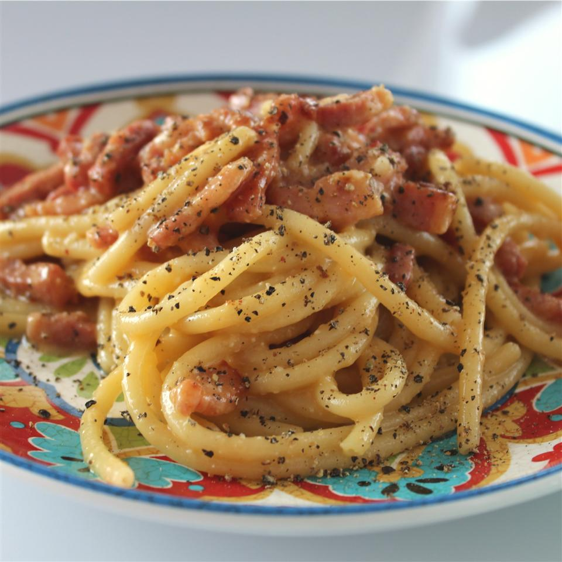

Spaghetti alla Carbonara

Description
This dish was created in the Lazio region (the area around Rome) in the middle of the 20th century,
after World War Two. We don't use cream, milk, garlic, onions or other strange ingredients; we use
only guanciale, eggs, pecorino cheese, and lots of black pepper (carbonaro is the Italian for coal miner).
This isn't the Italian-American version, it's the real, creamy carbonara and it comes right from Italy,
where I live. Buon appetito.
Ingredients
- 2 teaspoons olive oil
- 1 pound guanciale(cured porkcheek), diced
- 16oz spaghetti
- 3 eggs
- 10 tablespoons grated Pecorino cheese
- salt
- ground black pepper
Steps
- Heat olive oil in a large skillet over medium heat; add guanciale.
Cook, turning occasionally, until evenly browned and crispy, 5 to 10 minutes.
Remove from heat and drain on paper towels.
- Bring a large pot of salted water to a boil.
Cook spaghetti in the boiling water, stirring occasionally until tender yet f
irm to the bite, about 9 minutes. Drain and return to the pot.
Let cool, stirring occasionally, about 5 minutes.
- Whisk eggs, half of the Pecorino Romano cheese, and some black pepper in a bowl until smooth and creamy.
Pour egg mixture over pasta, stirring quickly, until creamy and slightly cooled. Stir in guanciale.
Top with remaining Pecorino Romano cheese and more black pepper.